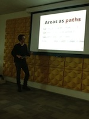
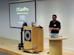
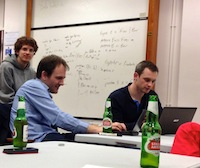
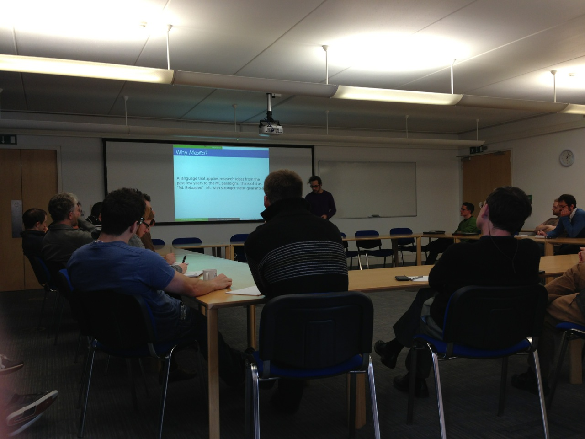
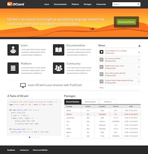
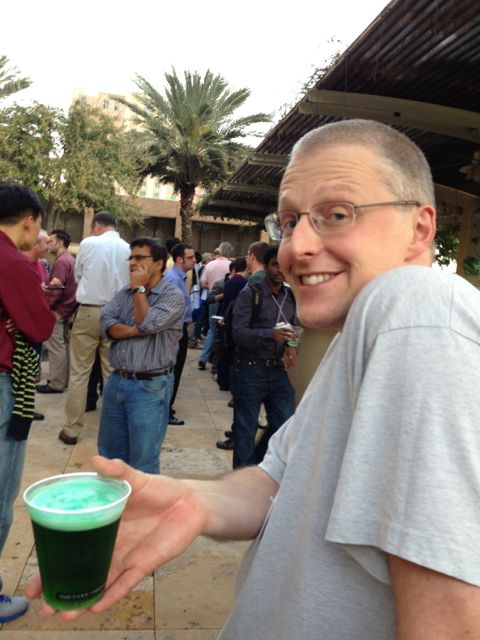
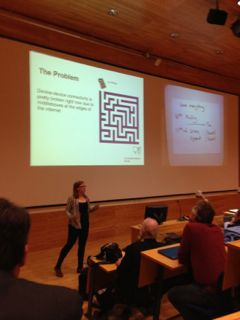
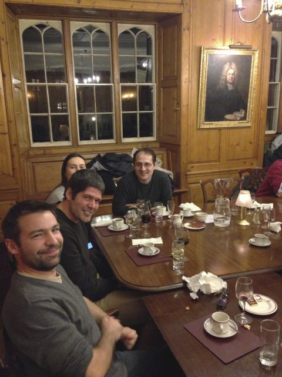
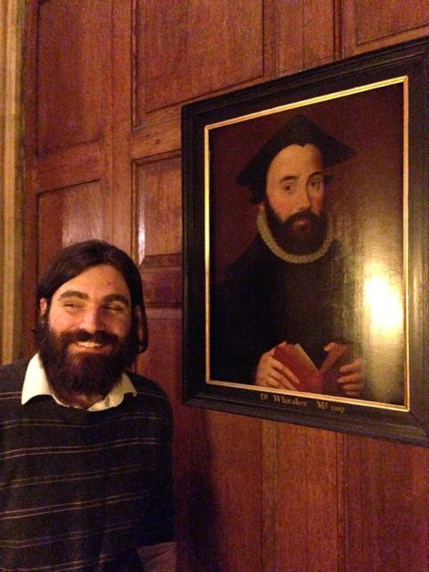
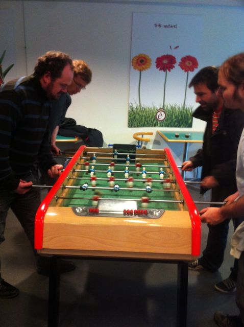

Dec 2013
This time last year in 2012, I had just
announced the
formation of a new group called OCaml Labs in the
Cambridge Computer Lab that would combine research
and community work towards the practical application of functional programming.
An incredible year has absolutely flown by, and I've put together this post to
summarise what's gone on, and point to our future directions for 2014.
The theme of our group was not to be pure research, but rather a hybrid group
that would take on some of the load of day-to-day OCaml maintenance from
INRIA, as well as help grow the wider OCaml community.
To this end, all of our projects have been highly collaborative, often
involving colleagues from OCamlPro,
INRIA, Jane Street,
Lexifi and Citrix.
This post covers progress in tooling, the compiler and
language, community efforts, research
projects and concludes with our priorities for
2014.
At the start of 2013, OCaml was in the interesting position of being a mature
decades-old language with a small, loyal community of industrial users who built
mission critical applications using it. We had the opportunity to sit down
with many of them at the OCaml Consortium
meeting and prioritise where we started work. The answer came back clearly:
while the compiler itself is legendary for its stability, the tooling around it
(such as package management) was a pressing problem.
OPAM
Our solution to this tooling was centered around the
OPAM package manager that
OCamlPro released into beta just at the end of 2012, and
had its first stable release in March 2013. OPAM differs from most system
package managers by emphasising a flexible distributed workflow that uses
version constraints to ensure incompatible libraries aren't mixed up (important
for the statically-typed OCaml that is very careful about dependencies).
Working closely with OCamlPro we developed a git-based
workflow to make it possible for users (both individual or industrial) to
easily build up their own package repositories and redistribute OCaml code, and
started curating the package
repository.
The results have been satisfying: we started with an initial set of around 100 packages in
OPAM (mostly imported by the 4 developers), and ended 2013 with 587 unique packages and 2000 individual versions, with contributions from 160 individuals. We now have a curated
central package repository for anyone
to submit their OCaml code,
several third-party remotes are maintained (e.g. the Xen Project
and Ocsigen). We also regularly
receive releases of the Core libraries
from Jane Street, and updates from sources as varied as Facebook,
Coherent PDF,
to the Frenetic SDN research.
A notable contribution from OCamlPro during this time was to
clarify the licensing on
the package repository to be the liberal
CC0, and also to pass ownership to
the OCaml organization on GitHub, where it's now
jointly maintained by OCaml Labs, OCamlPro and anyone else that wishes to
contribute.
A lens into global OCaml code
It's been quite interesting just watching all the varied code fly into the
repository, but stability quickly became a concern as the new packages piled
up. OCaml compiles to native code on not just x86, but also PowerPC, Sparc and
ARM CPUs.
We kicked off various efforts into automated testing: firstly David Sheets
built the
OCamlot daemon
that would schedule builds across all the exotic hardware. Later in the year,
the Travis service launched support for testing from GitHub pull requests,
and this became the front line of automated
checking for all
incoming new packages to OPAM.
A major headache with automated testing is usually setting up the right build
environment with external library dependencies, and so we added Docker
support to make it
easier to bulk-build packages for local developer use, with the results of
builds available publically for
anyone to help triage. Unfortunately fixing the bugs themselves is still a
very manual process, so
more volunteers are always welcome to help out!
We're going to be really seeing the rewards from all this effort as OCaml
4.02 development proceeds, since we can now adopt a data-driven approach
to changing language features instead of guessing how much third-party
code will break. If your code is in OPAM, then it'll be tested as new
features such as module aliases,
injectivity and
extension points show up.
Better documentation
The venerable
OCamlDoc tool
has done an admirable job for the last decade, but is increasingly showing its
age due to a lack of support for cross-referencing across packages. We started
working on this problem in the summer when Vincent Botbol
visited us on an internship, expecting it to be a quick job to come up with
something as good as Haskell's excellent Haddock online documentation.
Instead, we ran into the "module wall": since OCaml makes it so easy to
parameterise code over other modules, it makes it hard to generate static
documentation without outputting hundreds of megabytes of HTML every time.
After some hard work from Vincent and Leo, we've got a working prototype that
lets you simply run opam install opam-doc && opam doc core async to generate
package documentation. You can see the results for
Mirage online, but expect to see this integrated
into the main OCaml site for all OPAM packages as we work through polishing up
the user interface.
Turning OPAM into libraries
The other behind-the-scenes effort for OPAM has been to keep the core command-line
tool simple and stable, and to have it install OCaml libraries that can be
interfaced with by other tools to do domain-specific tasks. Thomas Gazagnaire,
Louis Gesbert and David Sheets have been steadily hacking away at this and
we now have opamfu to run operations
over all packages, and an easy-to-template opam2web
that generates the live opam.ocaml.org website.
This makes OPAM easier to deploy within other organizations that want to integrate
it into their workflow. For example, the software
section of the OCaml Labs website is regularly
generated from a search of all OPAM packages tagged ocamllabs. We also used
it to rewrite the entire OPAM repository in one epic diff to add external
library dependencies via a command-line shim.
OPAM-in-a-Box
All of this effort is geared towards making it easier to maintain reusable
local OPAM installations. After several requests from big universities to help
out their teaching needs, we're putting together all the support needed to
easily redistribute OPAM packages via an
"OPAM-in-a-Box" command that uses
Docker containers to let you clone and do lightweight
modifications of OCaml installations.
This will also be useful for anyone who'd like to run tutorials or teach OCaml,
without having to rely on flaky network connectivity at conference venues: a problem we've suffered from too!
Core Compiler
Starting to work on a real compiler can often be a daunting prospect, and so
one initiative we started this year is to host regular compiler hacking sessions where people could find a curated list of features to work on, with the regular developers at hand to help out when people get stuck, and free beer and pizza to oil the coding wheels. This has worked out well, with around 20 people showing up on average for the three we held, and several patches submitted upstream to OCaml. Gabriel Scherer and Damien Doligez have been helping this effort by tagging junior jobs in the OCaml Mantis bug tracker as they are filed.
Leo White started the year fresh out of completing his PhD with Alan Mycroft, and before he realized what he'd
gotten himelf into was working with Alain Frisch on the
future of syntax transformations in OCaml. We started off our first
wg-camlp4 working group on the new
lists.ocaml.org host, and a spirited discussion
started that
went on
and on for
several months. It ended with a very satisfying design for a simpler extension
points mechanism which Leo presented
at the OCaml 2013 workshop at ICFP, and is now merged into OCaml 4.02-trunk.
Namespaces
Not all of the working groups were quite as successful in coming to a conclusion as the Camlp4 one. On the Platform mailing list, Gabriel Scherer started a discussion on the design for namespaces in OCaml. The resulting discussion was useful in separating multiple concerns that were intermingled in the initial proposal, and Leo wrote a comprehensive blog post on a proposed namespace design.
After further discussion at ICFP 2013 with Jacques Garrigue later in the year, it turns out adding support for module aliases would solve much of the cost associated with compiling large libraries such as Core, with no backwards compatibility issues. This solution has now been integrated into OCaml 4.02.0dev and is being tested with Core.
Delving into the bug tracker
Jeremy Yallop joined us in April, and he and Leo also leapt into the core
compiler and started triaging issues on the OCaml bug
tracker. This seems unglamorous in the
beginning, but there rapidly turned out to be many fascinating threads that
shed light on OCaml's design and implementation through seemingly harmless
bugs. Here is a pick of some interesting threads through the year that we've
been involved with:
This is just a sample of some of the issues solved in Mantis; if you want to
learn more about OCaml, it's well worth browsing through it to learn from over
a decade of interesting discussions from all the developers.
Thread-local storage runtime
While OCamlPro was working on their reentrant OCaml runtime, we took a different tack by adding thread-local storage to the runtime instead, courtesy of Stephen Dolan. This is an important choice to make at the outset of adding multicore, so both approaches are warranted. The preemptive runtime adds a lot of code churn (due to adding a context parameter to most function calls) and takes up a register, whereas the thread-local storage approach we tried doesn't permit callbacks to different threads.
Much of this work isn't interesting on its own, but forms the basis for a fully multicore runtime (with associated programming model) in 2014. Stay tuned!
Ctypes
One other complaint from the Consortium members was quite surprising: the difficulty of using the OCaml foreign function interface safely to interface with C code. Jeremy Yallop began working on the ctypes library that had the goal of eliminating the need to write any C code at all for the vast majority of foreign bindings.
Instead, Ctypes lets you describe any C function call as an OCaml value, and provides various linkage options to invoke that function into C. The first option he implemented was a dlopen interface, which immediately brought us the same level of functionality as the Python or Haskell Ctypes equivalents. This early code was in itself startlingly useful and more pleasant to use than the raw FFI, and various folk (such as David Sheets' libsodium cryptography bindings) started adopting it.
At this point, I happened to be struggling to write the Foreign Function Interface chapter of Real World OCaml without blowing through our page budget with a comprehensive explanation of the existing system. I decided to take a risk and write about Ctypes instead, since it let new users to the language have a far more productive experience to get started. Xavier Leroy pointed out some shortcomings of the library in his technical book review, most notably with the lack of an interface with C. The design of Ctypes fully supports alternate linking mechanisms than just dlopen though, and Jeremy has added automatic C stub generation support as well. This means that if you use Ctypes to build an OCaml binding in 2014, you can choose several mechanisms for the same source code to link to the external system. Jeremy even demonstrated a forking model at OCaml 2013 that protects the OCaml runtime from the C binding via process separation.
The effort is paying off: Daniel Bünzli ported SDL2 using ctypes, and gave us extensive feedback about any missing corner cases, and the resulting bindings don't require any C code to be written. Jonathan Protzenko even used it to implement an OCaml controlle
r for the Adafruit Raspberry Pi RGB LCD!
Our community efforts were largely online, but we also hosted visitors over the year and regular face-to-face tutorials.
Online at OCaml.org
While the rest of the crew were hacking on OPAM and OCaml, Amir Chaudhry and Philippe Wang teamed up with Ashish Agarwal and Christophe Troestler to redesign and relaunch the OCaml website. Historically, OCaml's homepage has been the caml.inria.fr domain, and the ocaml.org effort was begun by Christophe and Ashish some years ago to modernize the web presence.
The webpages were already rather large with complex scripting (for example, the 99 Problems page runs the OCaml code to autogenerate the output). Philippe developed a template DSL that made it easier to unify a lot of the templates around the website, and also a Markdown parser that we could link to as a library from the rest of the infrastructure without shelling out to Pandoc.
Meanwhile, Amir designed a series of interactive wireframe sketches and gathered feedback on it from the community. A local design agency in Cambridge helped with visual look and feel, and finally at the end of the summer we began the migration to the new website, followed by a triumphant switchover in November to the design you see today.
The domain isn't just limited to the website itself. Leo and I set up a SVN-to-Git mirror of the OCaml compiler Subversion repository on the GitHub OCaml organization, which is proving popular with developers. There is an ongoing effort to simplify the core compiler tree by splitting out some of the larger components, and so camlp4 is also now hosted on that organization, along with OASIS. We also administer several subdomains of ocaml.org, such as the mailing lists and the OPAM repository, and other services such as the OCaml Forge are currently migrating over. This was made significantly easier thanks to sponsorship from Rackspace Cloud (users of XenServer which is written in OCaml). They saw our struggles with managing physical machines and gave us developer accounts, and all of the ocaml.org infrastructure is now hosted on Rackspace. We're very grateful to their ongoing help!
If you'd like to contribute to infrastructure help (for example, I'm experimenting with a GitLab mirror), then please join the infrastructure@lists.ocaml.org mailing list and share your thoughts. The website team also need help with adding content and international translations, so head over to the website issue tracker and start proposing improvements you'd like to see.
Next steps for ocaml.org
The floodgates requesting features opened up after the launch of the new look and feel. Pretty much everyone wanted deeper OPAM integration into the main website, for features such as:
- Starring and reviewing packages
- Integrating the opam-doc documentation with the metadata
- Display test results and a compatibility matrix for non-x86 and non-Linux architectures.
- Link to blog posts and tutorials about the package.
Many of these features were part of the original wireframes but we're being careful to take a long-term view of how they should be create
d and maintained.Rather than building all of this as a huge bloated opam2web extension, David Sheets (our resident relucant-to-admit-it web expert) has designed an overlay directory scheme that permits the overlaying of different metadata onto the website. This lets one particular feature (such as blog post aggregation) be handled separately from the others via Atom aggregators.
Real World OCaml
A big effort that took up most of the year for me was finishing and publishing an O'Reilly book called Real World OCaml with Yaron Minsky and Jason Hickey. Yaron describes how it all started in his blog post, but I learnt a lot from developing a book using the open commenting scheme that we
developed just for this.
In particular, the book ended up shining a bright light into dark language corners that we might otherwise not have explored in OCaml Labs. Two chapters of the book that I wasn't satisfied with were the objects and classes chapters, largely since neither Yaron nor Jason nor I had ever really used their full power in our own code. Luckily, Leo White decided to pick up the baton and champion these oft-maligned (but very powerful) features of OCaml, and the result is the clearest explanation of them that I've read yet. Meanwhile, Jeremy Yallop helped out with extensive review of the Foreign Function Interface chapter that used his ctypes library. Finally, Jeremie Dimino at Jane Street worked hard on adding several features to his utop toplevel that made it compelling enough to become our default recommendation for newcomers.
All in all, we ended up closing over 2000 comments in the process of writing the book, and I'm very proud of the result (freely available online, but do buy a copy if you can to support it). Still, there's more I'd like to do in 2014 to improve the ease of using OCaml further. In particular, I removed a chapter on packaging and build systems since I wasn't happy with its quality, and both Thomas Gazagnaire and I intend to spend time in 2014 on improving this part of the ecosystem.
Tutorials and Talks
We had a lively presence at ICFP 2013 this year, with the third iteration of the OCaml 2013 held there, and Stephen Dolan presenting a paper in the main conference. I liveblogged the workshop as it happened, and all the talks we gave are linked from the program. The most exciting part of the conference for a lot of us were the two talks by Facebook on their use of OCaml: first for program analysis using Pfff and then to migrate their massive PHP codebase using an OCaml compiler. I also had the opportunity to participate in a panel at the Haskell Workshop on whether Haskell is too big to fail yet; lots of interesting perspectives on scaling another formerly academic language into the real world.
Yaron Minsky and I have been giving tutorials on OCaml at ICFP for several years, but the release of Real World OCaml has made it significantly easier to give tutorials without the sort of labor intensity that it took in previous years (one memorable ICFP 2011 tutorial that we did took almost 2 hours to get everyone installed with OCaml. In ICFP 2013, it took us 15 minutes or so to get everyone started). Still, giving tutorials at ICFP is very much preaching to the choir, and so we've started speaking at more general-purpose events.
Our first local effort was FPDays in Cambridge, where Jeremy Yallop and Amir Chaudhry ran the tutorial with help from Phillipe Wang, Leo White and David Sheets. The OCaml session there ended up being the biggest one in the entire two days, and Amir wrote up their experiences. One interesting change from our ICFP tutorial is that Jeremy used js_of_ocaml to teach OCaml via JavaScript by building a fun Monty Hall game.
Visitors and Interns
Since OCaml Labs is a normal group within the Cambridge Computer Lab, we often host academic visitors and interns who pass through. This year was certainly diverse, and we welcomed a range of colleagues:
- Mathias Bourgoin has just finished his work on interfacing OCaml with GPUs, and gave us a seminar on how his SPOC tool works (also available in OPAM via a custom remote).
- Benjamin Canou (now at OCamlPro) practised his OCaml 2013 talk on building high-level interfaces to JavaScript with OCaml by giving a departmental seminar.
- Roberto Di Cosmo, who directs the IRILL organization on Free Software in Paris delivered a seminar on constraint solving for package systems that are as large-scale as Debian's.
- Thomas Gazagnaire visited during the summer to help plot the Mirage 1.0 and OPAM 1.1 releases. He has also since joined OCaml Labs fulltime to work on Nymote.
- Louis Gesbert from OCamlPro visited for 2 weeks in December and kicked off the inaugral OPAM developers summit (which was, admittedly, just 5 developers in the Kingston Arms, but all good things start in a pub, right?)
- Jonathan Protzenko presented his PhD work on Mezzo (which is now merged into OPAM), and educated us on the vagaries of Windows support.
- Gabriel Scherer from the Gallium INRIA group visited to discuss the direction of OPAM and various language feature discussions (such as namespaces). He didn't give a talk, but promises to do so next time!
- Benoît Vaugon gave a seminar on his OCamlCC OCaml-to-C compiler, talked about porting OCaml to 8-bit PICs, and using GADTs to implement Printf properly.
We were also visited several times by Wojciech Meyer from ARM, who was an OCaml developer who maintained (among other things) the ocamlbuild system and worked on DragonKit (an extensible LLVM-like compiler written in OCaml). Wojciech very sadly passed away on November 18th, and we all fondly remember his enthusiastic and intelligent contributions to our small Cambridge community.
We also hosted visitors to live in Cambridge and work with us over the summer. In addition to Vincent Botbol (who worked on OPAM-doc as described earlier) we had the pleasure of having Daniel Bünzli and Xavier Clerc work here. Here's what they did in their own words.
Xavier Clerc: OCamlJava
Xavier Clerc took a break from his regular duties at INRIA to join us over the summer
to work on OCaml-Java and adapt it to the latest
JVM features. This is an incredibly important project to bridge OCaml with the huge
Java community, and here's his report:
After a four-month visit to the OCaml Labs dedicated to the OCaml-Java
project, the time has come for an appraisal! The undertaken work can be split
into two areas: improvements to code generation, and interaction between the
OCaml & Java languages. Regarding code generation, several classical
optimizations have been added to the compiler, for example loop unrolling,
more aggressive unboxing, better handling of globals, or partial evaluation
(at the bytecode level). A new tool, namely ocamljar, has been introduced
allowing post-compilation optimizations. The underlying idea is that some
optimizations cannot always be applied (e.g. depending whether multiple
threads/programs will coexist), but enabling them through command-line flags
would lead to recompilation and/or multiple installations of each library
according to the set of chosen optimizations. It is thus far more easier to
first build an executable jar file, and then modify it according to these
optimizations. Furthermore, this workflow allows the ocamljar tool to take
advantage of whole-program information for some optimizations. All these
improvements, combined, often lead to a gain of roughly 1/3 in terms of
execution time.
Regarding language interoperability, there are actually two directions
depending on whether you want to call OCaml code from Java, or want to call
Java code from OCaml. For the first direction, a tool allows to generate Java
source files from OCaml compiled interfaces, mapping the various constructs
of the OCaml language to Java classes. It is then possible to call functions,
and to manipulate instances of OCaml types in pure Java, still benefiting
from the type safety provided by the OCaml language. In the other direction,
an extension of the OCaml typer is provided allowing to create and manipulate
Java instances directly from OCaml sources. This typer extension is indeed a
thin layer upon the original OCaml typer, that is mainly responsible for
encoding Java types into OCaml types. This encoding uses a number of
advanced elements such as polymorphic variants, subtyping, variance
annotations, phantom typing, and printf-hack, but the end-user does not have
to be aware of this encoding. On the surface, the type of instances of the
Java Object classes is java'lang'Object java_instance, and instances can be
created by calling Java.make Object().
While still under heavy development, a working prototype is available, and bugs can be reported. Finally, I would like to thank the OCaml Labs for providing a great working
environment.
Daniel Bünzli: Typography and Visualisation
Daniel joined us from Switzerland, and spent some time at Citrix before joining us in OCaml Labs. All of his software is now on OPAM, and is seeing ever-increasing adoption from the community.
Released a first version of Vg [...] I'm
especially happy about that as I wanted to use and work on these ideas since
at least 2008. The project is a long term project and is certainly not
finished yet but this is already a huge step.
Adjusted and released a first version of
Gg. While the module was already mostly
written before my arrival to Cambridge, the development of Vg and Vz prompted
me to make some changes to the module.
[...] released Otfm, a
module to decode OpenType fonts. This is a work in progress as not every
OpenType table has built-in support for decoding yet. But since it is needed
by Vg's PDF renderer I had to cut a release. It can however already be used
to implement certain simple things like font kerning with Vg, this can be
seen in action in the vecho binary installed by Vg.
Started to work on Vz, a
module for helping to map data to Vg images. This is really unfinished and is
still considered to be at a design stage. There are a few things that are
however well implemented like (human) perceptually meaningful color
palettes and the
small folding stat module (Vz.Stat). However it quickly became evident that
I needed to have more in the box w.r.t. text rendering in Vg/Otfm. Things
like d3js entirely rely on the SVG/CSS support for text which makes it easy
to e.g. align things (like tick labels on such
drawings). If you can't
rely on that you need ways of measuring rendered text. So I decided to
suspend the work on Vz and put more energy in making a first good release of
Vg. Vz still needs quite some design work, especially since it tries to be
independent of Vg's backend and from the mechanism for user input.
Spent some time figuring out a new "opam-friendly" release workflow in
pkgopkg. One of my problem is that by designing in the small for programming
in the large --- what a slogan --- the number of packages I'm publishing is
growing (12 and still counting). This means that I need to scale horizontally
maintenance-wise unhelped by the sad state of build systems for OCaml. I need
tools that make the release process flawless, painless and up to my quality
standards. This lead me to enhance and consolidate my old scattered
distribution scripts in that repo, killing my dependencies on Oasis and
ocamlfind along the way. (edited for brevity, see here)
Daniel also left his bicycle here for future visitors to use, and the "Bünzli-bike"
is available for our next visitor! (Louis Gesbert even donated lights, giving
it a semblance of safety).
Industrial Fellows
Most of our regular funding bodies such as EPSRC or EU FP7 provide funding, but leave all the intellectual input to the academics. A compelling aspect of OCaml Labs has been how involved our industrial colleagues have been with the day-to-day problems that we solve. Both Jane Street and Citrix have senior staff regularly visiting our group and working alongside us as industrial fellows in the Computer Lab.
- Mark Shinwell from Jane Street Europe has been working on improving the state of native debugging in OCaml, by adding extended DWARF debugging information to the compiler output. Mark is also a useful source of feedback about the forthcoming design of multicore, since he has daily insight into a huge production codebase at Jane Street (and can tell us about it without us requiring access!).
- Dave Scott is the principal architect of XenServer at Citrix in Cambridge. This year has been transformative for that project, since Citrix open-sourced XenServer to GitHub and fully adopted OPAM into their workflow. Dave is the author of numerous libraries that have all been released to OPAM, and his colleagues Jon Ludlam and Euan Harris are also regular visitors who have also been contributors to the OPAM and Mirage ecosystems.
Research Projects
The other 100% of our time at the Labs is spent on research projects. When we started the group, I wanted to set up a feedback loop between local people using OCaml to build systems, with the folk developing OCaml itself. This has worked out particularly well with a couple of big research projects in the Lab.
Mirage
Mirage is a library operating system written in OCaml that compiles source code into specialised Xen microkernels, developed at the Cambridge Computer Lab, Citrix and the Horizon Digital Economy institute at Nottingham. This year saw several years of effort culminate in the first release of Mirage 1.0 as a self-hosting entity. While Mirage started off as a quick experiment into building specialised virtual appliances, it rapidly became useful to make into a real system for use in bigger research projects. You can learn more about Mirage here, or read the Communications of the ACM article that Dave Scott and I wrote to close out the year.
This project is where the OCaml Labs "feedback loop" has been strongest. A typical Mirage application consists of around 50 libraries that are all installed via OPAM. These range from device drivers to protocol libraries for HTTP or DNS, to filesystems such as FAT32. Coordinating regular releases of all of these would be near impossible without using OPAM, and has also forced us to use our own tools daily, helping to sort out bugs more quickly. You can see the full list of libraries on the OCaml Labs software page.
Mirage is also starting to share code with big projects such as XenServer now, and we have been working with Citrix engineers to help them to move to the Core library that Jane Street has released (and that is covered in Real World OCaml). Moving production codebases this large can take years, but OCaml Labs is turning out to be a good place to start unifying some of the bigger users of OCaml into one place. We're also now an official Xen Project incubator project, which helps us to validate functional programming to other Linux Foundation efforts.
Nymote and User Centric Networking
The release of Mirage 1.0 has put us on the road to simplifying embedded systems programming. The move to the centralized cloud has led to regular well-publicised privacy and security threats to the way we handle our digital infrastructure, and so Jon Crowcroft, Richard Mortier and I are leading an effort to build an alternative privacy-preserving infrastructure using embedded devices as part of the User Centric Networking project, in collaboration with a host of companies led by Technicolor Paris.
This work also plays on the strong points of OCaml: it already has a fast ARM backend, and Mirage can easily be ported to the new Xen/ARM target as hardware becomes available.
One of the most difficult aspects of programming on the "wide area" Internet are dealing with the lack of a distributed identity service that's fully secure. We published our thoughts on this at the USENIX Free and Open Communications on the Internet workhsop, and David Sheets is working towards a full implementation using Mirage. If you're interested in following this effort, Amir Chaudhry is blogging at the Nymote project website, where we'll talk about the components as they are released.
Data Center Networking
At the other extreme from embedded programming is datacenter networking, and we started the Network-as-a-Service research project with Imperial College and Nottingham. With the rapid rise of Software Defined Networking this year, we are investigating how application-specific customisation of network resources can build fast, better, cheaper infrasructure. OCaml is in a good position here: several other groups have built OpenFlow controllers in OCaml (most notably, the Frenetic Project), and Mirage is specifically designed to assemble such bespoke infrastructure.
Another aspect we've been considering is how to solve the problem of optimal connectivity across nodes. TCP is increasingly considered harmful in high-through, high-density clusters, and George Parisis led the design of Trevi, which is a fountain-coding based alternative for storage networking. Meanwhile, Thomas Gazagnaire (who joined OCaml Labs in November), has been working on a branch-consistent data store called Irminsule which supports scalable data sharing and reconciliation using Mirage. Both of these systems will see implementations based on the research done this year.
Higher Kinded Programming
Jeremy Yallop and Leo White have been developing an approach that makes it possible to write programs with higher-kinded polymorphism (such as monadic functions that are polymorphic in the monad they use) without using functors. It's early days yet, but there's a library available on OPAM that implements the approach, and a draft
paper that outlines the design.
Priorities for 2014
This year has been a wild ride to get us up to speed, but we now have a solid sense of what to work on for 2014. We've decided on a high-level set of priorities led by the senior members of the group:
- Multicore: Leo White will be leading efforts in putting an end-to-end multicore capable OCaml together.
- Metaprogramming: Jeremy Yallop will direct the metaprogramming efforts, continuing with Ctypes and into macros and extension points.
- Platform: Thomas Gazagnaire will continue to drive OPAM development towards becoming the first OCaml Platform.
- Online: Amir Chaudhry will develop the online and community efforts that started in 2013.
These are guidelines to choosing where to spend our time, but not excluding other work or day-to-day bugfixing. Our focus on collaboration with Jane Street, Citrix, Lexifi, OCamlPro and our existing colleagues will continue, as well as warmly welcoming new community members that wish to work with us on any of the projects, either via internships, studentships or good old-fashioned open source hacking.
I appreciate the whole team's feedback in editing this long post into shape, the amazing professorial support from Jon Crowcroft, Ian Leslie and Alan Mycroft throughout the year, and of course the funding and support from Jane Street, Citrix, RCUK, EPSRC, DARPA and the EU FP7 that made all this possible. Roll on 2014, and please do get in touch with me with any queries!
Jun 2013
The rain continues to plummet down relentlessly as "summer" starts in OCaml
Labs. The most exciting news has been the public release of the Real World
OCaml, which hit the front page of the usual news
aggregators and generated huge interest! This (reminiscent of the Xen 1.0
release) promptly took down servers for a couple of hours, but we managed to
minimise downtime in time for the Californians waking up.
O'Reilly has also started selling PDF copies of the book under their Rough
Cuts program. This gives you
a copy of the final book when it's released too. Commenting is still open
on the online version, so please do feel free to
participate there if you have time.
Systems Projects
Mirage: Anil and Dave did the last of the sweeping build changes to make
Mirage friendlier to use for beginners. Previously, we required a custom OPAM
switch to build kernels, but now we use virtual
packages to separate the
choice of compiler and packages. This of course breaks all our documentation,
but we're going to do a big sweep in July before
OSCON with the
new scheme. Vincent has also been burning through the core platform libraries,
cleaning them up and adding documentation strings. He is also building a
shared memory vchan driver that will
make parallel-Mirage unikernels very easy to coordinate on the same host.
The huge news from our friends at Citrix is the open-sourcing of
XenServer, which is the popular Citrix product that
embeds the OCaml XAPI cloud management
stack. There are almost 100 major components
released as part of this, several of which can
be directly reused with Mirage. Mirage was always an ambitious project, but
it's all coming together now thanks to bold moves such as this from Citrix!
Signpost: We woke up to the excellent but slightly scary news that
our USENIX FOCI paper was accepted.
This now means that we get to present it in August at USENIX Security, but
the team is now racing to pull together the prototypes into a complete system
before the conference. Nothing like a deadline to focus the mind! We're
also working on the camera-ready version of the paper, which we will share
here when it's ready.
OCamlot: David Sheets did an astounding job at pulling together a
working continuous build system in a very short amount of time, and promptly
managed to melt some of the older non-x86
machines in Anil's office. Once Anil
sadly replaced them, the builder churned through a matrix of different compiler
versions (4.0,4.1dev,4.2dev), architectures (x86, x86_64, ARM, PowerPC), and
operating systems (Debian, Ubuntu, FreeBSD, OpenBSD to start with). There's
a development URL, but
the next step is to retire this and move it to a proper home at ocaml.org.
Having continuous build for OPAM is really, really useful though, as it lets us
vet pull requests on several architectures before merging them. It also let
Anil repair OCaml on OpenBSD/macppc
too, which is possibly the most obscure fix he's done in a while.
The next steps with OCamlot are to take a shot at porting the core to
Jenga, which is Jane Street's next-generation
distributed build system. This should let us improve the fault-tolerance and
logging aspects of it before putting it properly into production later in the summer.
Ctypes: The May release
brought with it a good chunk of feedback, so Jeremy spent time incorporating
that and contributing to the Real World OCaml ctypes chapter. He also added
support for garbage-collecting closures passed to C, and also very cool support
for printing C types and values.
Our friends at Citrix have started looking at ctypes, and Rob Hoes has already
used it to write bindings to the
Netlink Protocol Library Suite.

OPAM-doc: Vincent Botbol got the documentation generator stable enough
to pass the Core library through. This is particularly challenging since Core
exercises pretty much every trick in the book when it comes to the use of the
module system. However, Vincent successfully demonstrated the workflow of
OPAM-doc at the end-of-month meeting, and is aiming to have a public release
via OPAM in July (hopefully in time for the next beta release of Real World OCaml,
which uses Core heavily).
Visualisation libraries: Daniel Bünzli has
been spending a few months based in Citrix, working on a foundational new
declarative drawing library written in pure OCaml. The Vg is already quite functional despite
still being in beta, and features a Javascript backend
that renders to both SVG and Canvas in HTML5. That's not all though! He's
also developing the Vz visualization library
that uses Vg to assemble more complex scenes and graphs. Daniel's going to
join us in OCaml Labs for the remainder of the summer, so we're looking
forward to developing this more and using it on our various Platform projects
such as OCamlot.
Outreach
Real World OCaml: As mentioned earlier, the beta release of RWO went
splendidly, with a pleasing vibe that the book is what people expected. There
were some interesting criticisms of the choice of Github authentication, but
we've had over 6000 registered commentators despite this (and of course, we
have plans brewing to tackle the identity problem).
No beta release is perfect, of course, and our now-public commenting system has
resulted in over 1500
issues being raised. Well, that's all of Yaron, Anil and Jason's free time
gone for some time!
OCaml.org: We're in the process of looking at the site as a whole and
designing the workflow we'd like to have for growing and maintaining it. Some
discussions have taken place about using Markdown in place of the current HTML
snippets, which would make it easier for external contributors to get involved.
In the meantime, Amir has converted the current site to Markdown format to see
how this process would work in practice. You can see his experimenting and
scripts in the temporary repo in
the markdown-site/ folder.
Philippe also showed off MPP
at the internal meetings, and is stabilising it for a public release this
summer (once it has been integrated into the ocaml.org workflow).
This month also had a number of programming language gurus show up at the Lab
for the Algebraic Effects and Handlers workshop organised by Sam
Staton. Most of the group attended this, as
we're all interested in how to encode effects for several of our projects (most
notably Irminsule).
We also enjoyed a visit by Benoît Vaugon, who gave a talk on his
OCamlCC
OCaml-to-C compiler, and also participated in a talk on
OCAPIC. He
also chatted with us about his alternative GADT-based implementation of
Printf, which promises to both
speed up and simplify the printer support in OCaml (and also relieve Mirage of
another dependency on libc).
Link roundup:
May 2013

May is exam time in Cambridge, and the corridors of the OCaml Labs resounded
with the wailing of frantic students finishing their dissertations and
preparing for exams. We welcomed Vincent Botbol to join us for a summer internship,
and he started hacking on the new opam-doc
right away.
Anil, Thomas, Leo and Amir also visited Jane
Street HQ in New York City, where we had a productive
couple of days reviewing our projects and getting feedback from them about
approaches to multicore and type system enhancements. Ashish
Agarwal also organised a fun evening with the New
York OCaml Users Group,
where Anil and Thomas presented our plans for the nascent OCaml Platform.
Systems Projects
Mirage: This was a month of consolidation and bugfixing in Mirage. We've
been settling into weekly meetings to coordinate the hacking between us and
Citrix, and the minutes (1
2
3) may be useful if you
want to catch up. The biggest bugbear is always the build system, and we've
been exploring the use of Jenga as the
eventual async-aware coordination and build system for running Mirage kernels.
Dave made great progress with a
message-switch that coordinates
multiple kernels, and Balraj fixed several performance regressions in the
TCP/IP stack by building unit tests that spawn millions of parallel TCP
connections.
Signpost: We took a break from building prototypes to submit a paper on the
basic design to the USENIX Free and Open Communications (FOCI
2013) workshop. Haris and Heidi
blazed a path on writing this paper, and we've got even more ideas rolling
around about how to use DNSSEC to break the cloud deadlock. The
ocaml-dns continues to grow features too.
 Ctypes: Jeremy
announced
the first release of a new foreign-function mechanism for OCaml that doesn't
require you to write any C stubs at all! You can browse the source
code and
tutorial, and
install it via OPAM. This is very much the first 0.1 release, and we have
exciting future developments to turn this into a full-fledged replacement for
the fast-but-rather-difficult-to-use-right OCaml FFI.
Ctypes: Jeremy
announced
the first release of a new foreign-function mechanism for OCaml that doesn't
require you to write any C stubs at all! You can browse the source
code and
tutorial, and
install it via OPAM. This is very much the first 0.1 release, and we have
exciting future developments to turn this into a full-fledged replacement for
the fast-but-rather-difficult-to-use-right OCaml FFI.
OPAM-doc: Vincent Botbol started building on Leo's work on the new
opam-doc tool. This is intended to
replace the venerable ocamldoc with one that uses all the latest features of
the compiler. In particular, it can use the new typed AST cmt output to
avoid duplicating the compiler functionality, and can also build up a global
package table to generate complete cross-references across an entire OPAM
collection.
OCamlot: David has been building up the libraries and tools needed for
the continuous build infrastructure.
This includes much-improved
ocaml-github, bindings, which are now
being used to power the Real World OCaml site as
well as well as OCamlot. In addition, he's got an interesting collection of
regular expressions to automatically triage common failures from OPAM
(such as missing external dependencies), that should help reduce the manual
burden of getting thousands of tests results dumped on the small OPAM team.
Compiler Projects
OCaml-Java: Xavier Clerc has been hacking away at his next-generation
OCaml-Java backend (using many new features in JDK7). He's released a
preview of the bindings to
Java concurrency, and is looking for feedback on it.
Performance profiling: Mark Shinwell has been hacking on improving the
integration of the runtime with perf. This should give us the hooks to
reliably track where memory was allocated. His branch isn't going to land in
OCaml 4.1, but should be available as an OPAM switch for people to easily
try out when it's more stable.
Outreach
OCaml.org: Philippe and Amir have been putting their heads together with
Christophe and Ashish to turn the ocaml.org build pipeline
into something a little more structured. Philippe is building a template
processor for this purpose.
The OCaml site is a more complicated than the average site due to our desire to
embed js_of_ocaml interactive toplevels
throughout the tutorials, and also to have active OPAM integration throughout
the site to make it easier for newcomers to sample the language.
The design of a handful of pages are also now available to preview, if you
don't mind some manual git cloning. The best way to do this is to clone the
temporary repo onto your local
machine and look in the new-design/_site directory. There are examples of
the home page, 100 lines of OCaml page and several others. Since we're just
getting started with applying these changes the site isn't clicky (yet). For
some extra fun, try resizing your browser window and see how the pages reflow
to suit smaller (mobile) screens!
Real World OCaml: Anil, Yaron and Jason continue to work hard on getting
a release out of the door. We shipped a final alpha6 this month that is
chapter-complete, and have been preparing for a big public June release of
the book. Thousands of comments have been received and closed already,
making this an unusually active (but incredibly useful) ongoing review
process. Leo and Jeremy also contributed portions of text for the Objects
and FFI chapters in alpha6, and join Stephen Weeks as external contributors
to the book.
Meanwhile, Leo himself has recovered from the elation of being granted his PhD,
to the harsh reality of having to finish corrections. He has been forced by
his colleagues to stop hacking on OCaml and submit his final thesis. Rumours
are that he will reemerge in June after delivering his SAS
2013 talk on using an
implication-algebra generalisation of logic programming to concisely analyse
OpenMP programs for parallisation opportunities.
This month's talk was courtesy of Mathias Bourgoin,
who visited from France and gave a talk on his PhD work on GPU processing. His
tool, SPOC has been
released onto OPAM and is a set of easy-to-use tools for generating CUDA and
OpenCL code, and also a camlp4 extension to write external kernels directly in
OCaml. Thanks for visiting, Mathias!
Apr 2013
It's been a heads-down month of hacking at the Labs for April, as the
group have settled into their projects and are concentrating on getting code
out. We did take the opportunity to redesign the project pages as the active projects grew.
We welcomed Euan Harris as a new visitor, and he has
begun work on a distributed actor library in the vein of Erlang's
OTP. The prolific Daniel Bünzli also joined us for the summer to work on his Vg visualisation library. He's based out of the Citrix offices, and is also contributing to the Xen project.
OPAM: The project has entered a bug fixing stage after its release, and
the package set has steadily grown via external contributors. David Sheets has
been hacking away on the automated OCamlot
bot, and we released improved Github
API bindings. We're aiming to get OCamlot live and running in May, so stay
tuned! There is a steadily growing
collection of odd ARM and PowerPC
devices in Anil's desk that will generally make it easier to test your OCaml
code in unusual environments.
OCaml.org redesign: Progress on the website continues and we're now
working on the actual HTML/CSS from the earlier
mockups. We'll be
publishing these in a fork of the website
repository, so do feel free to create
issues there with your comments. Philippe has begun the
MPP templating tool to glue together
all the website scripts more coherently. Discussions about this take place on
the infrastructure mailing
list, which is open to all.

The monthly OCaml get togethers in the Cambridge
Makespace are also really fun. This month saw around 30
people wander through the doors, and work through the latest excerpts of
Real World OCaml. And around midnight, Jeremy and
Leo competed to find more and more obscure
bugs in the corners of the
OCaml type system... You can track the subsequent meetups via the NonDysFunctional Meetup group, which includes functional programmers from around the Cambridgeshire area. Jon and Anil also attended the Yahoo Hackday in London, where Jon met a giant robot and started SSL bindings, and Anil experimented with js_of_ocaml LocalStorage for Irminsule.
Systems projects
Mirage: We've finally got a release date for the first preview of
Mirage, which will be at O'Reilly OSCON this July! Pulling together the release is a big endeavour, and the
team has started weekly calls to work through the
project. The minutes for these are online, so you can
browse them to catch
up. There's also a slightly scary
checklist of all the
libraries that need to be released before July, so the team has its work cut
out for it! The Xen group also announced that it is joining the Linux Foundation,
and the press release gave Mirage a prominent mention as one of the key recent developments in Xen.
Irminsule: Thomas now has a full implementation of the git file format
in his cagit repository, and the interfaces
for Irminsule's branch-consistent model are coming together. He gave a demo to
the Mirage team, with discussion
notes available.
Compiler projects
Multicore and Concurrency: Stephen Dolan's made great progress on bringing up a multicore
runtime using thread-local storage, which results
in a surprisingly compact diff to the OCaml runtime. We're now moving onto the
higher-level bindings to use the parallel runtimes effectively from within OCaml.
We also began a wg-parallel working
group in order to start figuring out the evolution of the Lwt and
Async concurrency libraries.
libffi: Jeremy got frustrated by the difficulty of writing safe C bindings,
and started the ctypes library, which
offers a pure OCaml solution. This even includes managing callbacks across the
OCaml/C divide, and uses libffi under the hood
to remain efficient and platform-independent. There is the exciting possibility
about hooking this library with the compile-time metaprogramming to eliminate all performance cost, so we're going to spend some time
on this project to make it a well-documented alternative to the existing C FFI.

The OCaml Labs talk series continued with a visit from Francois
Pottier ad Jonathan
Protzenko from the INRIA
Gallium research team. Jonathan presented their
Mezzo language, which places
emphasis on aliasing and controlled access to mutation. This is of particular
interest to several of our systems projects that do not require the full power of
OCaml to build low-level systems components, and Raphael, Alan, Leo and Anil
had productive discussions about how we could try Mezzo out when it's released.
Link roundup:
Mar 2013
The OCaml Labs hackers continue to arrive, with David
Sheets arriving from sunny San Francisco, and Xavier Clerc visiting from the less-sunny
INRIA in France. David's done great work on several
OCaml libraries such as Cohttp and on
WebGL, and he's diving
straight into a first release of OCamlot before
starting his PhD later in the year. Xavier will
work on releasing his OCaml Java
2.0 rewrite this summer, which takes
advantage of all the latest JDK features for non-Java languages.
A new research grant has also been awarded to Jon Crowcroft.
The Hub of All Things is a £1.2m multi-disciplinary
project funded by the RCUK Digital Economy Programme and led by
Irene Ng
in Warwick. HAT aims to create a home platform, under the user's control,
where a market to exchange their personal data for new products and
personalised services could exist. The Cambridge piece of this work will use
Mirage for embedded systems programming, and
Signpost, to enable devices to connect and communicate
with each-other across the edge network.
OPAM: OPAM, the popular OCaml Package Manager, recently had its 1.0
release! OPAM has
been in development for just over a year, and this is a significant milestone
for the project. The OPAM package repository has had over 500 issues, closed over 400 pull requests and now contains over 450 packages
(and more than twice that number if you consider that multiple versions are
available). This kind of user adoption is a fantastic sign for the OCaml
community. We're very happy to be using OPAM as a key piece of the upcoming
OCaml Platform and the continuous integration and test system.

OCaml.org redesign: Amir extended the Balsamiq mockups into more
realistic static site designs that can be found on the
wiki. We're building
on the theme we began with the OCaml Logo, but also
including the full functionality we want for the revamped site. The samples
should give people an idea of the colour schemes and images we'll be using, and
feedback is very welcome. Next, we're creating the HTML/CSS templates we
need to make these mockups a reality.
OCamlot: Within hours of getting off the plane, David was already
getting well into the OCaml-based test tool and working on the pieces we
need to get to a usable first version. The OCamlot workflow was last
described in Amir's
Balsamiq mockups
in case you want to catch up. This work is made all the more important as
Jane Street continues to demonstrate their strong commitment to open-source
by sending in OPAM pull requests
every week
for new releases of their libraries. The
testing for these releases is currently handled manually and we're really
looking forward to having them dealt with automatically!
Systems projects

Mirage: There is much preparation ongoing for the big
xen.org incubation,
which has now been approved by the Xen community board. Vincent's work on
Mirari is going very well, and he's updated the
Mirage installation instructions
to use Mirari instead of the manual process required before.
Anil and Mort also attended
and presented the
ASPLOS 2013 paper in
Houston. For the curious,
Ben's Beans is the only good
coffee we could find suitable for a European in Texas.
Irminsule: Now that the core of Mirage is heading for release, the
team is turning their attention to the storage and distributed programming
challenge. Thomas and Anil have been working on a new
policy-free, branch-consistent storage layer that exposed a raw git-like
universe to Mirage applications. We're working on as part of the
Trilogy2 that's investigating how to improve the
reliability of congested datacenters.

Signposts: Heidi gave an excellent talk
about Signpost and the benefits it can offer internet users today
(see right). This was one of a set of talks that took place in the
Computer Lab, organised by Alan Mycroft, on open
software and open hardware with speakers such as
Jon 'maddog' Hall of
Linux International. There was fairly unanimous agreement that Heidi's
slides were better than Anil's.
Compiler projects
Multicore: Once the dreaded ICFP deadline was out of the way,
Stephen, Leo, Raphael and Anil put their heads together to start
architecting the support for parallel multicore support in the OCaml runtime.
A key part of the design space is to maintain the sequential performance and
simplicity of the existing runtime, but still make it easy to extend shared
memory onto different cores. We'll have more details on this shortly when
early prototypes are done and some benchmarks run.
Namespaces: Leo's also been extremely busy in the
platform mailing list, which has
been the location for the discussion of namespaces. A few hundred emails
have been exchanged on this topic and Leo has summarised the discussion and
made proposals in his blog post about
OCaml namespaces. Although this is a complex issue, aspects of namespaces will be important to
the work on the OCaml Platform so we look forward to the outcome of these
discussions.
Link roundup:
Feb 2013
Two new people joined the core team at Cambridge: Jeremy Yallop and Philippe Wang!
Jeremy has extensive expertise with meta-programming and generic programming,
and is initially looking at the camlp4 redesign.
Philippe has been taking on the challenge of running OCaml well on restricted embedded systems, which
will also have knock-on benefits to x86 compilation with the same optimisations.
Xavier Clerc also joined us for a day in advance of his
visit in April, with much interest in his Argot project
and the upcoming redesign of OCaml.org.
Two new research grants have been awarded that are relevant to the OCaml Labs mission:
- Network-as-a-Service is a 3-year grant to solve pressing problems in "Big Data" processing, and will enable us to continue to develop MirageOS and the use of OCaml and functional programming in this space. We're going to be collaborating with Imperial and Nottingham on this, with the Cambridge efforts led by Andrew Moore, Jon Crowcroft and Anil Madhavapeddy.
- Rigorous Engineering of Mainstream Systems asks how we can use rigorous maths to improve the quality of mainstream computer systems. It is led by Peter Sewell at Cambridge, and most of the tools (including Ott and Lem) are written in OCaml and will benefit from the ongoing work at OCaml Labs.
OPAM:  We've been working hard on an OPAM 1.0 release, and Thomas and Anil have been sweeping through the package tree to stabilise the repository via automated builds.
We also had a brilliant visit from Roberto Di Cosmo from PPS, who has contributed extensively to the open-source community over the years. He gave a talk on the challenges of handling large-scale versioning of packages from a mathematical perspective (particularly applied to Debian), which is very useful input for the ongoing OPAM work.
We've been working hard on an OPAM 1.0 release, and Thomas and Anil have been sweeping through the package tree to stabilise the repository via automated builds.
We also had a brilliant visit from Roberto Di Cosmo from PPS, who has contributed extensively to the open-source community over the years. He gave a talk on the challenges of handling large-scale versioning of packages from a mathematical perspective (particularly applied to Debian), which is very useful input for the ongoing OPAM work.
Mailing lists: A new opengl@lists.ocaml.org was
set up for those interested in OpenGL and WebGL on OCaml, and discussion so far
has covered LabGL on the Raspberry Pi. There are also still plans to begin
working groups for build systems and parallelism but will be announced in due
course once the preparatory work has been completed.
Real World OCaml: The book is now on alpha3,
where Part 1 is nearly complete. New sections on installation and a more
expanded prologue have also been included in this version.
Redesign: As part of the redesign
work, and to showcase the kind of
additional functionality we'd like to create, Amir put together a set of
screencasts that talk though a wireframe demo of the new site. These short
videos covered elements of design, the new documentation system and an overview
of how the continuous integration system would work. You can read more and
experience the clickable demo via Amir's blog post.
Systems and compiler projects
Mirage: Anil gave two tech talks about Mirage this month at Citrix and Microsoft Research, as practise talks for ASPLOS 2013. Mirage itself is nearing a release, and Vincent Bernardoff has joined the Citrix engineering team to help drive it to release. He's been primarily focussed on the build frontend (dubbed Mirari) to make Mirage applications easier to compile out-of-the-box.
camlp4 redesign: There has been more discussion about the future of camlp4 and Leo posted another summary on his thoughts for an alternative apporach to quotations.
Link roundup:
Jan 2013
There's a lot of interest in the work we're doing, and the number of collaborative projects is increasing fast.
We held the first monthly meeting in the Computer Lab, where Anil provided
an overview of the research work that OCaml Labs is
starting. An interesting theme of the discussion that followed was
related to undergraduate teaching and how things like the OCaml
Platform and infrastructure would make it easier for
students to get to grips with programming.
For the evening after the meeting, Amir set up
an informal OCaml hacking/tutorial session in Cambridge. Around 15 eager
people attended the event in Makespace (a community
workshop), with most of them being new to the language. Anil introduced
Real World OCaml
and shared the
introductory chapters while Thomas provided help with OPAM. This turned out
to be a great test of the installation process for newcomers to OCaml, as
well as the book's instructions. A number of issues came to light, partly
related to a perfect storm of package issues, which everyone is keen to
improve. Despite these problems, attendees were very positive and were keen
to see more gatherings like this in future. When Amir asked for feedback,
pretty much everyone commented on how great the pizza was.
OCaml Labs also hosted its first visitor this month as Thomas
Gazagnaire, the CTO of OCamlPro, spent three weeks in
Cambridge. Much effort was put into preparing Mirage for release, discussions
about parallelism and the OCaml Platform, and anything where OPAM is a crucial
component. Worth noting is that (at time of writing) the
opam-repository has now
become the overall most forked OCaml project on Github.
The Platform mailing list
has also been formed for discussion regarding the OCaml Platform. Anyone
interested in the discussions about the platform, which will include
development on OPAM, should join this list.
Part of the Platform work involves creating a new
design for OCaml.org, which also
kicked-off this week.
Amir will keep people updated about progress via updates to the
OCL website,
Infrastructure mailing list and also by posting things to the
OCaml.org Github wiki. The
current stage of work involves thinking of the types of pages OCaml.org
requires, in order to refine the templates we need. As part of this, we
also commissioned a new logo for OCaml and although it's still under
development, you can see the latest draft on the
OCaml.org wiki.
Please send any feedback directly to Amir.

The Real World OCaml book website was released as a
limited alpha earlier in the month, with
the aim of getting early feedback and comments. Each paragraph of the online
book has commenting functionality, using Github issues as a backend. This
means that each comment made on the book website creates a new issue on
Github, which authors/commenters can track and discuss before editing the
content. So far there have been over 250 comments on the alpha, with half
them being dealt with already.
A new EU project also kicked-off called Trilogy 2, which builds on the
award-winning work from the original Trilogy project. OnApp (a member of Trilogy 2), will be providing the cloud Infrastructure for ocaml.org, and Thomas and Anil will be expanding the Mirage project into distributed computing under this umbrella. As befits an EU project, it kicked off with an especially nice dinner at Christ's College...
Systems research
Mirage: This was formally proposed as an
incubated Xen.org project and the proposal was put forward for
community review. There were many positive
comments on the Xen mailing lists (along the lines of
"Mirage is cool stuff")
and voting is currently underway by eligible members of the Xen community.
Assuming a positive outcome, incubation would give the Mirage project greater
visibility and access to resources. This would accelerate progress towards an
alpha release in Q1/Q2 this year. In
addition to this, a proposal for an
OSCON talk was also submitted and the camera-ready version of the ASPLOS paper is
now available.
Illuminate: A related research topic where Mirage could be useful is in embedded systems
and the Internet of Things. One specific use case is the
Illuminate Project, where Mirage can be used
to create appliances running on the ARM microcontrollers alongside an LED
lighting network. Such a lighting system is now deployed in large parts of
the Computer Laboratory and will form an excellent test-bed to explore these
ideas further.
Signpost:: 
Signpost is also achieving greater outreach with
Jon Crowcroft discussing such technologies at a
meeting in Dagstul on Decentralized Systems for Privacy
Preservation.
Cambridge also hosted Eric Schmidt
from Google, where he is the Humanitas Visiting Professor in Media for 2013.
Eric delivered a talk on the future
of conflict, combat and intervention. Anil and Jon got an opportunity to
discuss Signposts with him for 20 minutes, which was an interesting clash of
opinions (we want decentralised identity, Google want it all to go through
them). Either way, we're even more motivated to get the Signpost tech out to
the big bad world as soon as possible. Meanwhile, Haris found his identical
twin brother in St Johns Masters Lodge...
Compiler projects
Several mailing lists are in progress for various community-driven projects.
The first of these is a working group on the future of syntax extensions in
OCaml (wg-camlp4). This group is
chaired by Alain Frisch and Leo White and has
generated a great deal of discussion in the last two weeks. Leo is
summarising his thoughts in a series of blog posts
as he goes. Further working groups on parallelism in OCaml and build systems are under
discussion and will be announced in due course.
As well as all the research and development activity we've also been
recruiting. We've had several rounds of interviews and made a number of
offers so hopefully we'll be announcing new members of the OCaml Labs team
in the coming months. In addition, we'd also like to mention that Leo
successfully defended his PhD Thesis in January. Finally, we'd like to
welcome a new honorary member of OCaml Labs, Nathan Scott, born on 30th
January. Congratulations Dave!
Link roundup:
Dec 2012
OCaml Labs kicked-off with an internal meeting of the Cambridge-based members,
who battled endless snow to make it to the meeting.
There are over 20 people involved just within the building and over 30
including those outside the University. We welcomed a few new members,
including Leo White (Postdoc), Raphael Proust (PhD student) and Stephen Dolan
(PhD student). At this initial gathering Anil talked over some of the projects
that were already taking place in the Lab, as well as the new work that would
be supported by OCaml Labs.
Significant progress was made on the research side too.
Mirage has had a flurry of new releases as we
prepare for a first public release, and we're in the final stages of being
officially incubated as a xen.org project.
Signpost is also
taking shape, mainly due to the addition of DNSSEC to the
ocaml-dns implementation.
There's been industrial interest in the applications of Signpost and the team
is pursuing these for more use cases.
We also began work on a new website for the Real World
OCaml. We took inspiration from our friends who wrote
Real World Haskell, and the site will have commenting functionality so that
people can suggest improvements before the book is finalised. As part of this,
we also worked with a design firm to begin creating a new logo for the OCaml
language.
The logo will be placed into the
public domain for use by anyone.
Last, but certainly not least, Ashish put the new ocaml.org
website live, to much electronic applause.
A great way to end 2012!
Nov 2012
OCaml Labs finally opened its doors with announcements from
Yaron and
Anil! Although
much of the remainder of November was spent on administration and wiring up
machines for the forthcoming test cluster, we
also celebrated the acceptance of a paper on Mirage
to ASPLOS 2013.

We also had a very productive visit from OCamlPro.
Fabrice, Thomas and Pierre came over to discuss the new
OPAM package manager and the plans for building an
OCaml Platform in 2013. This was in preparation for the subsequent Consortium
meeting of the industrial board of OCaml, where Anil was able to present (and
get approved) an overview of what ocaml.org would become.
You can see the slides of his talk online. An
interesting thing to note is just how broad the set of OCaml language users
are: right the way from formal methods, to systems projects, and even web
developers.
Since the Consortium meeting, the infrastructure behind ocaml.org is being
built out and there's already been helpful input via the
infrastructure mailing list. A continuous build system has been put together for internal testing, with
support from Citrix, and OPAM itself continues to mature and grow in
popularity.
 Ctypes: Jeremy
announced
the first release of a new foreign-function mechanism for OCaml that doesn't
require you to write any C stubs at all! You can browse the source
code and
tutorial, and
install it via OPAM. This is very much the first 0.1 release, and we have
exciting future developments to turn this into a full-fledged replacement for
the fast-but-rather-difficult-to-use-right OCaml FFI.
Ctypes: Jeremy
announced
the first release of a new foreign-function mechanism for OCaml that doesn't
require you to write any C stubs at all! You can browse the source
code and
tutorial, and
install it via OPAM. This is very much the first 0.1 release, and we have
exciting future developments to turn this into a full-fledged replacement for
the fast-but-rather-difficult-to-use-right OCaml FFI.
{kind=link}
{kind=link}
{kind=link}
{kind=link}
{kind=link}
{kind=link}
{kind=link}
{kind=link}
{kind=link}
{kind=link}
{kind=link}
{kind=link}
{kind=link}
{kind=link}
{kind=link}
{kind=link}